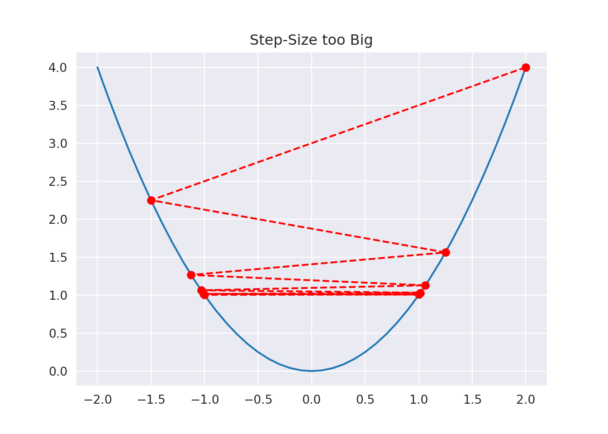
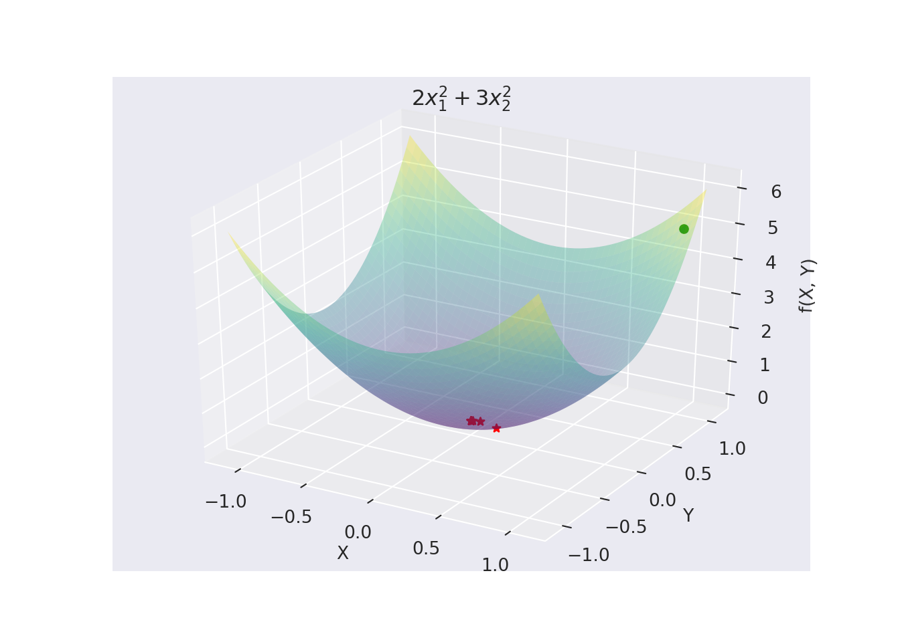
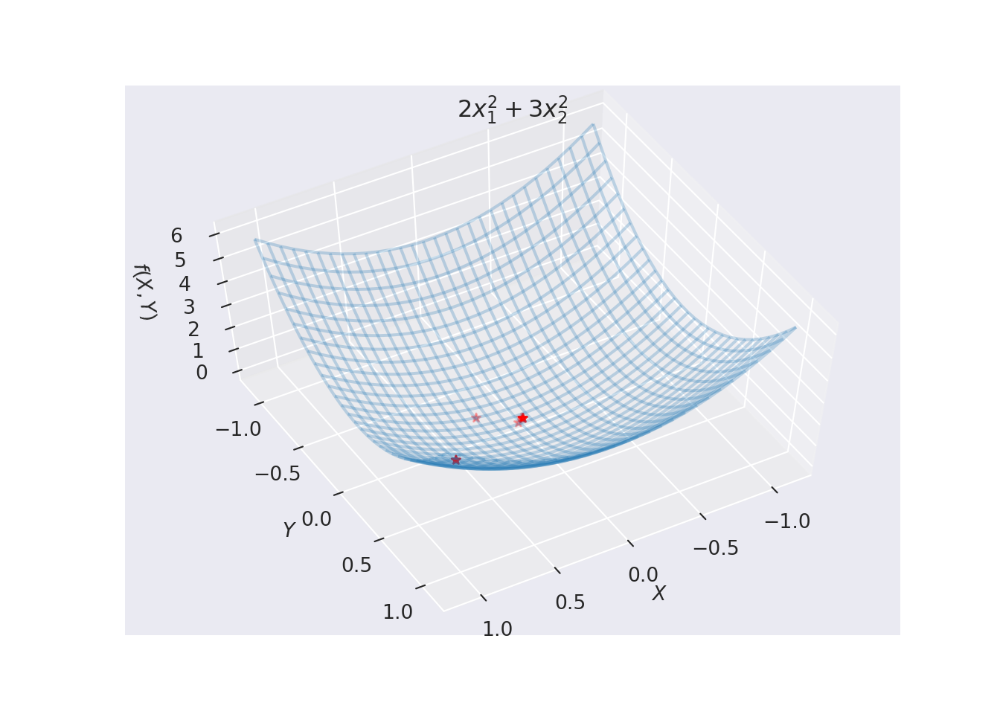
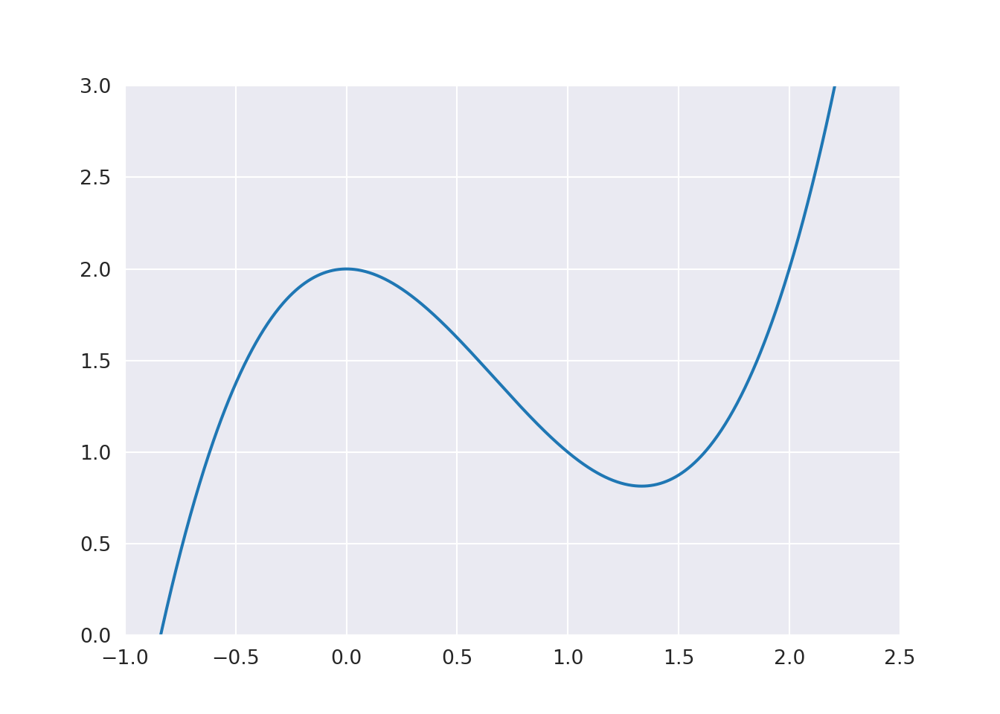
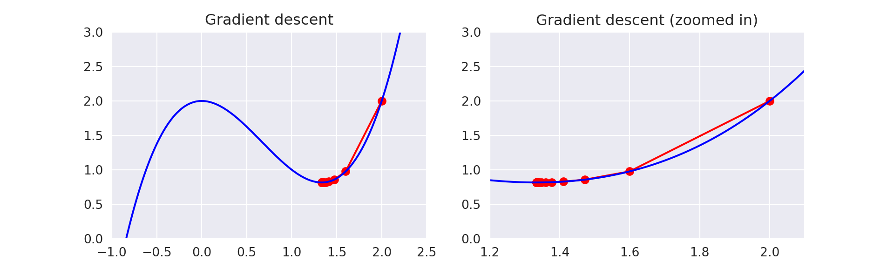
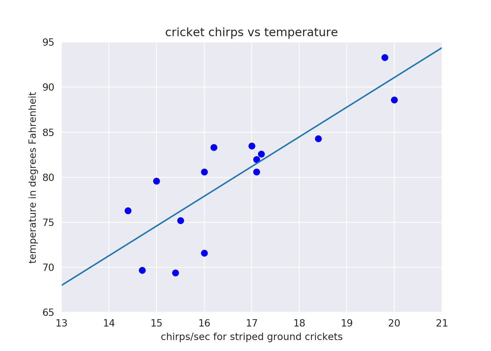

Chapter 6 Gradient Methods for Unconstrained Optimisation
In this chapter we will study the methods for solving nonlinear unconstrained optimisation problems. The non-linear minimisation algorithms to be described here are iterative methods which generate a sequence of points, \(\mathbf{x}^0, \mathbf{x}^1\ldots.\) say, or \(\{\mathbf{x}^k\}\) (superscripts denoting iteration number), hopefully converging to a minimiser \(\mathbf{x}^*\) of \(f(\mathbf{x}).\) Univariate minimisation along the line in a particular direction is known as the line search technique. One dimensional minimisation is known as line search subproblem in many variable unconstrained non-linear minimisation.
6.1 General Line Search Techniques used in Unconstrained Multivariate Minimisation
The algorithms for multivariate minimisation are all iterative processes which fit into the same general framework:
At the beginning of the \(k\)-th iteration the current estimate of minimum is \(f(\mathbf {x}^k)\), and a search is made in \(\mathbb{R}^n\) from \(\mathbf{x}^k\) along a given vector direction \(\mathbf{d}^k\) (\(\mathbf{d}^k\) is different for different minimization methods) in an attempt to find a new point \(\mathbf{x}^{k+1}\) such that \(f(\mathbf{x}^{k+1})\) is sufficiently smaller than \(f(\mathbf{x}^k)\). This process is called line (or linear) search.
Line-search methods, therefore, generate the iterates by setting: \[\begin{equation} \mathbf{x}^{k+1} = \mathbf{x}^k + \alpha^k \mathbf{d}^k\label{eq:linesearch1} \end{equation}\] where \(\mathbf{d}^k\) is a search direction and \(\alpha_k > 0\) is chosen so that: \[\begin{equation} f(\mathbf{x}^k + \alpha^k \mathbf{d}^k)= f(\mathbf{x}^{k+1}) < f(\mathbf{x}^k), \tag{6.1} \end{equation}\] Therefore, for a given \(\mathbf{d}^k\), a line-search procedure is used to choose an \(\alpha_k > 0\) that approximately minimises \(f\) along the ray \({x^k + \alpha^k d^k : \alpha^k>0}\). Hence, the line search is the univariate minimisation involving the single variable \(\alpha^k\) (since both the \(\mathbf{x}^k\) and \(\mathbf{d}^k)\) are known \(f(\mathbf{x}^k + \alpha^k\mathbf{d}^k)\) becomes a function of \(\alpha^k\) only) such that: \[\begin{equation} f(\alpha^k) = f(\mathbf{x}^k + \alpha^k\mathbf{d}^k).\tag{6.2} \end{equation}\]
Bear in mind that this single variable minimiser cannot always be obtained analytically and hence some numerical techniques may be necessary.
6.1.1 Challenges in Computing Step Length \(\alpha^k\)
The challenges in finding a good \(\alpha^k\) are both in avoiding a step length that is too long or too short. Consider the Figures below:

Here the objective function is \(f(x) = x^2\) and the iterates, \(x^{k+1} = x^k + \alpha^k d^k\) are generated by the descent directions \(d^k = (-1)^{k+1}\) with steps \(\alpha^k = 2 + \frac{3}{2^{k+1}}\) with an initial starting point of \(x_0 = 2\).

Here the objective function is \(f(x) = x^2\) and the iterates, \(x^{k+1} = x^k + \alpha^k d^k\) are generated by the descent directions \(d^k = (-1)\) with steps \(\alpha^k = \frac{1}{2^{k+1}}\) with an initial starting point of \(x_0 = 2\).

6.2 Exact and Inexact Line Search
Given the direction \(\mathbf{d}^k\) and the point \(\mathbf{x}^k\), \(f(\mathbf{x}^k+\alpha \mathbf{d}^k)\) becomes a function of \(\alpha\). Hence it is simply a one dimensional minimisation with respect to \(\alpha\). The solution of \(\frac{df(\alpha)}{d\alpha}=0\) will determine the exact location of the minimiser \(\alpha^k\). However, it may not be possible to locate the exact location of \(\alpha^k\) for which \(\frac{df(\alpha)}{d\alpha}=0\). It may even require very large number of iterations to locate the minimiser \(\alpha^k\). Nonetheless, the idea is conceptually useful. Notice that for exact line search the slope \(\frac{df}{d\alpha}\) at \(\alpha^k\) must be zero. Therefore, we get: \[\begin{equation} \dfrac{df(\mathbf{x}^{k+1})}{d\alpha}=\nabla f(\mathbf{x}^{k+1})^T\frac{d\mathbf{x}^{k+1}}{d\alpha}=\mathbf{g} (x^{k+1})^T\mathbf{d}^k=0.\tag{6.3} \end{equation}\]
Line search algorithms used in practice are much more involved than the one dimensional search methods (optimisation methods) presented in the previous chapter. The reason for this stems from several practical considerations. First, determining the value of \(\alpha_k\) that exactly minimises \(f(\alpha)\) may be computationally demanding; even worse, the minimiser of \(f(\alpha)\) may not even exist. Second, practical experience suggests that it is better to allocate more computational time on iterating the optimisation algorithm rather than performing exact line searches. These considerations led to the development of conditions for terminating line search algorithms that would result in low-accuracy line searches while still securing a decrease in the value of \(f\) from one iteration to the next.
In practice, the line search is terminated when some descent conditions along the line \(\mathbf{x}^k+\alpha \mathbf{d}^k\) are satisfied. Hence, it is no longer necessary to go for the exact line search. The line search carried out in this way is known as the inexact line search. A further justification for the inexact line search is that it is not efficient to determine the line search minima to a high accuracy when \(\mathbf{x}^k\) is far from the minimiser \(\mathbf{x}^*\). Under these circumstances, nonlinear minimisation algorithms employ an inexact or approximate line search. To sum up, exact line search relates to theoretical concept and the inexact is its practical implementation.
Remark:
Each iteration of a line search method computes a search direction \(\mathbf{d}^k\) and then decides how far to move along that direction. The iteration is given by \[\mathbf{x}^{k+1}=\mathbf{x}^k+\alpha^k\mathbf{d}^k,\] where the positive scalar \(\alpha^k\) is called the step length. The success of a line search method depends on effective choices of both the direction \(\mathbf{d}^k\) and and the step length \(\alpha^k\). Most line search algorithms require \(\mathbf{d}^k\) to be a descent direction.
6.2.1 Algorithmic Structure
The typical behaviour of a minimisation algorithm is that it repeatedly generates points \(\mathbf{x}^k\) such that as \(k\) increases \(\mathbf{x}^k\) moves close to \(\mathbf{x}^*.\) Features of a minimisation algorithm is that \(f(\mathbf{x}^k)\) is always reduced on each iteration, which imply that the stationary point turns out to be a local minimiser. In a minimisation algorithm it is required to supply an initial estimate, say \(\mathbf{x}^0\). At each iteration the algorithm finds a descent direction along which the function is minimised. This minimisation algorithm in a particular direction is known as the line search. The basic structure of the general algorithm is:
- Initialise the algorithm with estimate \(\mathbf{x_k}\). Initialise \(k = 0\).
- Determine a search direction \(\mathbf{d}^k\) at \(\mathbf{x}^k\).
- Find \(\alpha^k\) to minimise \(f(\mathbf{x}^k + \alpha \mathbf{d}^k)\) with respect to \(\alpha\).
- Set \(\mathbf{x}^{k+1} = \mathbf{x}^k + \alpha^k\mathbf{d}^k\).
- Line search is stopped when \(f(\mathbf{x}^{k+1}) < f(\mathbf{x}^k)\)
- If algorithm meets stopping criteria then STOP, ELSE set \(k = k + 1\) and go back to (2).
Different minimisation methods select \(\mathbf{d}^k\) in different ways in \((2)\). Steps \((3 \& 4)\) is the one dimensional sub-problem carried out along the line \(\mathbf{x}^{k+1}=\mathbf{x}^k+\alpha^k\mathbf{d}^k\) for \(\alpha\in [0,1]\). The direction \(\mathbf{d}^k\) at \(\mathbf{x}^k\) must satisfy the descent condition.
6.3 The Descent Condition
Central to the development of the gradient based minimisation methods is the idea of a descend direction. Conditions for the descent direction can be obtained using Taylor series around the point \(\mathbf{x}^k\). Using two terms of Taylor series we have: \[\begin{equation} f(\mathbf{x}^k+\alpha \mathbf{d}^k) - f(\mathbf{x}^k) = \alpha \mathbf{d^k}^T \nabla f(\mathbf{x}^k) + \cdots\tag{6.4} \end{equation}\] Clearly the descent condition can easily be seen as: \[\begin{equation} \mathbf{d}^{k{^T}}\nabla f(\mathbf{x}^k) <0,\tag{6.5} \end{equation}\] since we require the left hand side of Equation (6.4) to be negative.
6.4 The Direction of Greatest Reduction
A simple line search descent method is the steepest descent method in which: \[\begin{equation} \mathbf{d}^k=-\nabla f(\mathbf{x}^k)=-\mathbf{g}^k\, , \ \ \ \ \forall k \end{equation}\]
From Equation (6.4) we see that: \[\begin{eqnarray} f^{k+1}-f^k&=&\alpha^k{\mathbf{d}^k}^T\mathbf{g}^k\\ &=&\alpha^k\lVert \mathbf{d}^k \rVert \lVert\mathbf{g}^k\rVert \cos\theta,\tag{6.6} \end{eqnarray}\] where \(\theta\) can be interpreted geometrically as the angle between \(\mathbf{d}^k\) and \(\mathbf{g}^k\). If we allow \(\theta\) to vary holding \(\alpha^k, \lVert \mathbf{d}^k \rVert\) and \(\lVert\mathbf{g}^k\rVert\) constant, then the right hand side of Equation (6.6) is most negative when \(\theta=\pi\). Thus when \(\alpha^k\) is sufficiently small, the greatest reduction in function is obtained in the direction: \[\begin{equation} \mathbf{d}^k=-\mathbf{g}^k \tag{6.7} \end{equation}\] This negative gradient direction which satisfy the descent condition (6.7) gives rise to the method of steepest descent.
6.5 The Method of Steepest Descent
Here the the search direction is taken as the negative gradient and the step size, \(\alpha_k,\) is chosen to achieve the maximum decrease in the objective function \(f\) at each step. Specifically we solve the problem: \[\begin{equation} \text{Minimise}\ f\left(\mathbf{x}^{(k)} - \alpha \nabla f\left(\mathbf{x}^{(k)}\right)\right)\ \ \text{w.r.t.}\ \alpha \end{equation}\] This is now a one-dimensional optimisation problem.
6.5.1 Steepest Descent Algorithm
Given \(\mathbf{x}_0\), for all iterations \(k = 1, 2, \ldots\) until stopping criterion is met, do:
- Compute gradient \(\mathbf{g}(\mathbf{x}^k) = \nabla f(\mathbf{x}^k)\).
- Compute \(\alpha^k\) such that \(f(\mathbf{x}^k - \alpha^k \mathbf{g}^k) = \underset{\text{min} }{\alpha} f(\mathbf{x}^k - \alpha \mathbf{g}^k)\).
- Compute \(\mathbf{x}^{k+1} = \mathbf{x}^k - \alpha^k \mathbf{g}^k\)
- If stopping criterion met STOP, Else set \(k = k + 1\) and go to (1).
6.5.2 Convergence Criteria
In practice the algorithm is terminated if some convergence criterion is satisfied. Usually termination is enforced at iteration \(k\) if one, or a combination of the following is met:Here \(\epsilon_1, \epsilon_2\) and \(\epsilon_3\) are designated some small positive tolerances.
6.5.2.1 Example
Consider \(f(\mathbf{x}) = 2x_1^2 + 3x_2^2\), where \(\mathbf{x}_0 = (1,1).\) Use two iterations of Steepest Descent.
Solution:
Compute \(\nabla f(\mathbf{x}) = \begin{bmatrix} 4x_1 \\ 6x_2\end{bmatrix} = -\mathbf{g}\).
First Iteration:
We know that: \[ \mathbf{x}_1 = \mathbf{x}_0 + \alpha_0 g(\mathbf{x}_0), \] so: \[ \mathbf{x}_1 = \begin{bmatrix} 1 \\ 1\end{bmatrix} - \begin{bmatrix} 4\alpha \\ 6\alpha\end{bmatrix} = \begin{bmatrix} 1 - 4\alpha \\ 1 - 6\alpha\end{bmatrix}. \] Therefore: \[\begin{eqnarray*} f(\mathbf{x}_0 + \alpha_0 g(\mathbf{x}_0)) &=& 2(1 - 4\alpha)^2 + 3(1 - 6\alpha)^2\\ &=& 2 - 16\alpha + 32\alpha^2 + 3 - 36\alpha + 108\alpha^2\\ \Rightarrow \nabla f(\mathbf{x}_0 + \alpha_0 g(\mathbf{x}_0)) &=& 280\alpha -52 = 0\\ \Rightarrow \alpha &=& 52/280 = 13/70. \end{eqnarray*}\] Finally: \[ \mathbf{x}_1 = \begin{bmatrix} 1 - 4\dfrac{13}{70} \\ 1 - 6\dfrac{13}{70}\end{bmatrix} = \begin{bmatrix} \dfrac{9}{35} \\ \dfrac{-4}{35}\end{bmatrix}. \]
Second Iteration:
We have: \[ \mathbf{x}_2 = \mathbf{x}_1 + \alpha_1 g(\mathbf{x}_1) \] Compute (Simplified here): \[ f(\mathbf{x}_1 + \alpha_1 g(\mathbf{x}_1)) = \dfrac{1}{35^2}\left(2(9 - 36\alpha)^2 + 3(-4 + 24\alpha)^2\right). \] We get: \[\begin{eqnarray*} \nabla f(\mathbf{x}_1 + \alpha_1 g(\mathbf{x}_1)) &=& 0\\ \Rightarrow 60\alpha &=& 13 \\ \alpha &=& \dfrac{13}{60} \end{eqnarray*}\] Therefore: \[ \mathbf{x}_2 = \mathbf{x}_1 + \alpha_1 g(\mathbf{x}_1) = \begin{bmatrix} \dfrac{9}{35} \\ \dfrac{-4}{35}\end{bmatrix} - \dfrac{13}{60}\begin{bmatrix} \dfrac{9}{35} \\ \dfrac{-4}{35}\end{bmatrix} = \begin{bmatrix} \dfrac{6}{175} \\ \dfrac{6}{175}\end{bmatrix}. \] The process continues in the same manner above. We can see from inspection that the function should achieve a minimum at (0, 0). We can see this as a sanity check in the Python code below.
It is also worth noting that since this is a quadratic function, we can actually use another technique. We will redo the first iteration as illustration. Specifically, the quadratic functions allow \(\alpha\) to be solved using: \[ \alpha_k = \dfrac{-g^{k^T}d^k}{d^{k^T}Q d^{k}}. \] Thus:
First Iteration:
Compute \(f(\mathbf{x}^0) = 5,\ \mathbf{g}(\bar{x}^0)^T = (4,6)\) and
\(Q = \begin{bmatrix} 4 & 0\\0 & 6 \end{bmatrix}\)
Therefore:
\[
\alpha_1 = -\dfrac{(g^k)^T d^k}{(d^k)^T Q d^k} = \dfrac{52}{(4,6)\begin{bmatrix}
4 & 0\\0 & 6
\end{bmatrix}\begin{bmatrix}
4 \\6
\end{bmatrix}} = \dfrac{13}{70}
\]
Thus:
\[
\mathbf{x}^1 = (1,1) - \dfrac{13}{70}(4,6) = \left(-\dfrac{9}{35},\dfrac{4}{35}\right)
\]
Similarly, the process repeats.

## <a list of 13 text.Text objects>
6.5.3 Inexact Line Search
Although you will only cover inexact line search techniques in the third year syllabus, we will quickly introduce a very simply inexact technique to use for the purpose of your labs.
6.5.3.1 Backtracking Line Search
One way to adaptively choose the step size is to do the following:
- First fix a parameter \(0 < \beta < 1\)
- Then at each iteration, start with \(t = 1\) and while \[ f(x - t\nabla f(x)) > f(x) - \dfrac{t}{2}\lVert \nabla f(x) \rVert^2, \] and update \(t = \beta t\).
This is a simple technique and tends to work quite well in practice. For further reading you can consult Convex Optimisation by Boyd.

6.5.4 Exercises
- Show that the value of the function \[ax_1^2+bx_2^2+cx_3^2\] reached after taking a single of the steepest descent method from the point \((1,1,1)^T\) is: \[ \dfrac{ab(b-a)^2+bc(c-b)^2+ca(a-c)^2}{a^3+b^3+c^3}. \]
- Show that if exact line search is carried out on the quadratic \[\frac{1}{2}x^TQx+b^Tx+c\] using the iteration \[ x^{k+1}=x^k+\alpha^kd^k, \] then: \[ \alpha^k=-\frac{g^{(k)T}d^k}{d^{(k)T}Qd^k}. \]
- Compute the first two iterations of the method of steepest descent applied to the objective function \[ f(\mathbf{x})=4{x_1}^2+{x_2}^2-{x_1}^2x_2 \] with \(x^0=[1,1]^T.\) Use exact line search.
- Use three iterations of the steepest descent method on the function \[ f(\mathbf{x})=3{x_1}^2+2{x_2}^2 \] with initial point \((1,1)^T\).
6.6 The Gradient Descent Algorithm and Machine Learning
We will briefly look at the context of what we have learnt from the machine learning perspective. This is to emphasize the power of this chapter. In machine learning, you will find the gradient descent algorithm everywhere. While the literature may seem to allude to this method being new, powerful and cool, it is really nothing more than the method of steepest descent introduced above.
6.6.1 Basic Example
Let’s try find a local minimum for the function \(f(x) = x^3 -2x^2 + 2\):
## (-1, 2.5)## (0, 3)
So from the above plot we can see that there is a local minimum somewhere around 1.3 - 1.4 according to the x-axis. Of course, we normally won’t be afforded the luxury of information such as this a priori, so let’s just assume we arbitrarily set our starting point to be \(x_0 = 2\). Implementing the gradient descent with a fixed stepsize, or learning rate (in the context of ML) we have:
x_old = 0
x_new = 2 # The algorithm starts at x=2
n_k = 0.1 # step size fixed at 0.1
precision = 0.0001 # tolerance value
x_list, y_list = [x_new], [f(x_new)]
# returns the value of the derivative of our function
def f_prime(x):
return 3*x**2-4*x
while abs(x_new - x_old) > precision:
x_old = x_new
s_k = -f_prime(x_old)
x_new = x_old + n_k * s_k
x_list.append(x_new)
y_list.append(f(x_new))
print("Local minimum occurs at:", x_new)## Local minimum occurs at: 1.3334253508453249print("Number of steps:", len(x_list))## Number of steps: 17How did the algorithm look step by step?
## (-1, 2.5)## (0, 3)## (1.2, 2.1)## (0, 3)
In our above implementation we had a fixed step-size \(n_k\). In machine learning, this is called the learning rate. You’ll notice this is contrary to the algorithm in the aforementioned pseudocode. Making the assumption of the fixed learning rate made the implementation easier but could yield the issues mentioned in the beginning of the chapter.
6.6.2 Adaptive Step-Size
One means of overcoming this issue is to use adaptive step-sizes. This can be done using scipy’s fmin function to find the optimal step-size at each iteration.
from scipy import stats
from scipy.optimize import fmin
# we setup this function to pass into the fmin algorithm
def f2(n,x,s):
x = x + n*s
return f(x)
x_old = 0
x_new = 2 # The algorithm starts at x=2
precision = 0.0001
x_list, y_list = [x_new], [f(x_new)]
# returns the value of the derivative of our function
def f_prime(x):
return 3*x**2-4*x
while abs(x_new - x_old) > precision:
x_old = x_new
s_k = -f_prime(x_old)
# use scipy fmin function to find ideal step size.
# Uses the downhill simplex algorithm which is a zero-order method
n_k = fmin(f2,0.1,(x_old,s_k), full_output = False, disp = False)
x_new = x_old + n_k * s_k
x_list.append(x_new)
y_list.append(f(x_new))
print("Local minimum occurs at ", float(x_new))## Local minimum occurs at 1.3333333284505209print("Number of steps:", len(x_list))## Number of steps: 4So we can see that using the adaptive step-sizes, we’ve reduced the number of iterations to convergence from 17 to 4. This is a substantial reduction, however, it must be noted that it takes time to compute the appropriate step-size at each iterations. This highlights a major issue in the decision making for optimisation: trying to find the balance between speed and accuracy.
How did the modified algorithm look step by step?
Well we can see that it converges rapidly and after the first two iterations, we need to zoom in to see further improvements.
## (-1, 2.5)## (1.2, 2.1)## (0, 3)## (1.3333, 1.3335)## (0, 3)
6.6.3 Decreasing Step-Size
Instead of using computational resources having to find an optimal step-size at each iteration, we could apply an dampening factor at each step to reduce the step-size over time. For example: \[ \eta(t + 1) = \dfrac{\eta(t)}{1 + t \times d} \]
x_old = 0
x_new = 2 # The algorithm starts at x=2
n_k = 0.17 # step size
precision = 0.0001
t, d = 0, 1
x_list, y_list = [x_new], [f(x_new)]
# returns the value of the derivative of our function
def f_prime(x):
return 3*x**2-4*x
while abs(x_new - x_old) > precision:
x_old = x_new
s_k = -f_prime(x_old)
x_new = x_old + n_k * s_k
x_list.append(x_new)
y_list.append(f(x_new))
n_k = n_k / (1 + t * d)
t += 1
print("Local minimum occurs at:", x_new)## Local minimum occurs at: 1.3308506740900838print("Number of steps:", len(x_list))## Number of steps: 6We can now see that we’ve still reduced the number of iterations required substantially but are not bounding to finding an optimal step-size at each iteration. This highlights that trade-off of finding cheap improvements that improve convergence at minimal cost.
How Do We Use the Gradient Descent in Linear Regression?
While using these line methods to find the minima of basic functions is interesting, one might wonder how this relates to some of the regressions we are interested in performing. Let us consider a slightly more complicated example. In this data set, we have data relating to how temperature affects the noise produced by crickets. Specifically, the data is a number of observations or samples of cricket chirp rates at various temperatures.
## (13, 21)## (65, 95)
What can we deduce from the plotted data?
We can see that the data set is exhibiting a linear relationship. Therefore, our aim is to find the equation of the straight line given by: \[ h_\theta(x) = \theta_0 + \theta_1 x, \] that best fits all of our data points, i.e. minimise the residual error.
The function that we are trying to minimize in this case is:
\(J(\theta_0,\theta_1) = {1 \over 2m} \sum\limits_{i=1}^m (h_\theta(x_i)-y_i)^2\)
In this case, our gradient will be defined in two dimensions:
\(\frac{\partial}{\partial \theta_0} J(\theta_0,\theta_1) = \frac{1}{m} \sum\limits_{i=1}^m (h_\theta(x_i)-y_i)\)
\(\frac{\partial}{\partial \theta_1} J(\theta_0,\theta_1) = \frac{1}{m} \sum\limits_{i=1}^m ((h_\theta(x_i)-y_i) \cdot x_i)\)
Below, we set up our function for h, J and the gradient:
h = lambda theta_0,theta_1,x: theta_0 + theta_1*x
def J(x,y,m,theta_0,theta_1):
returnValue = 0
for i in range(m):
returnValue += (h(theta_0,theta_1,x[i])-y[i])**2
returnValue = returnValue/(2*m)
return returnValue
def grad_J(x,y,m,theta_0,theta_1):
returnValue = np.array([0.,0.])
for i in range(m):
returnValue[0] += (h(theta_0,theta_1,x[i])-y[i])
returnValue[1] += (h(theta_0,theta_1,x[i])-y[i])*x[i]
returnValue = returnValue/(m)
return returnValueimport time
start = time.time()
theta_old = np.array([0.,0.])
theta_new = np.array([1.,1.]) # The algorithm starts at [1,1]
n_k = 0.001 # step size
precision = 0.001
num_steps = 0
s_k = float("inf")
while np.linalg.norm(s_k) > precision:
num_steps += 1
theta_old = theta_new
s_k = -grad_J(x,y,m,theta_old[0],theta_old[1])
theta_new = theta_old + n_k * s_k
print("Local minimum occurs where:")## Local minimum occurs where:print("theta_0 =", theta_new[0])## theta_0 = 25.128552558595363print("theta_1 =", theta_new[1])## theta_1 = 3.297264756251897print("This took",num_steps,"steps to converge")## This took 565859 steps to convergeend = time.time()
print(str(end - start) + 'seconds')## 20.08639121055603secondsIt’s clear that the algorithm seems to take quite a long time for such a trivial example. Let’s check that the values we’ve obtained from the gradient descent are any good. We can get the true values for \(\theta_0\) and \(\theta_1\) with the following:
from scipy import stats as sp
start = time.time()
actualvalues = sp.stats.linregress(x,y)
print("Actual values for theta are:")## Actual values for theta are:print("theta_0 =", actualvalues.intercept)## theta_0 = 25.232304983426026print("theta_1 =", actualvalues.slope)## theta_1 = 3.2910945679475647end = time.time()
print(str(end - start) + 'seconds')## 0.01975536346435547secondsOne thing this highlights is how much effort goes into optimising the functions found in these libraries. If one looks at the code inside linregress, clever exploitations to speed up the computation can be found.
Now, let’s plot our obtained results on the original data set:
## (13, 21)## (65, 95) So in our implementation above, we needed to compute the gradient at each step. While this might not seem important, it is! In this toy example, we only have 15 data points, however, imagine the computational intractability when millions of data points are involved.
6.6.4 Stochastic Gradient Descent
What we implemented above is often called Vanilla/Batch gradient descent. As pointed out, this implementation means that we need to sum the cost of each sample in order to calculate the gradient of the cost function. This means given 3 million samples, we would have to loop through 3 million times!
So to move a single step towards the minimum, one would need to calculate each cost 3 million times.
So what can we do to overcome this? Well, we can use the stochastic gradient descent. In this idea, we use the cost gradient of 1 sample at each iteration rather than the sum of the cost gradient of all samples. So recall our gradient equations from above:
\[\frac{\partial}{\partial \theta_0} J(\theta_0,\theta_1) = \frac{1}{m} \sum\limits_{i=1}^m (h_\theta(x_i)-y_i),\]
\[\frac{\partial}{\partial \theta_1} J(\theta_0,\theta_1) = \frac{1}{m} \sum\limits_{i=1}^m ((h_\theta(x_i)-y_i) \cdot x_i),\] where: \[ h_\theta(x) = \theta_0 + \theta_1 x. \] We now want to update our values at each item in the training set instead of all so that we can begin improvement straight away.
We can redefine our algorithm into the stochastic gradient descent for the simple linear regression as follows:
Randomly shuffle the data set
for k = 0, 1, 2, ... do
for i = 1 to m do\[ \begin{bmatrix} \theta_0 \\ \theta_1\end{bmatrix} = \begin{bmatrix} \theta_0 \\ \theta_1\end{bmatrix} - \alpha\begin{bmatrix} 2(h_\theta(x_i) - y_i) \\ 2x_i(h_\theta(x_i) - y_i)\end{bmatrix} \]
end for
end forDepending on the size of the data set, we run the entire data set 1 to \(k\) times.
So the key advantage here is that unlike batch gradient descent where we have to go through the entire data set before initiating any progress, we can now make process straight away as we move through the data set. This is the primary reason why stochastic gradient descent is used when dealing with large data sets.
6.6.4.1 Additional Example
Let us look at another example with the use of stochastic gradient descent for linear regression. We can create a set of 500 000 data points around the equation \(y = 2x + 17 + \epsilon\) on the domain \(x \in [0, 100]\).
Show in jupyter notebook - example breaks rstudio!